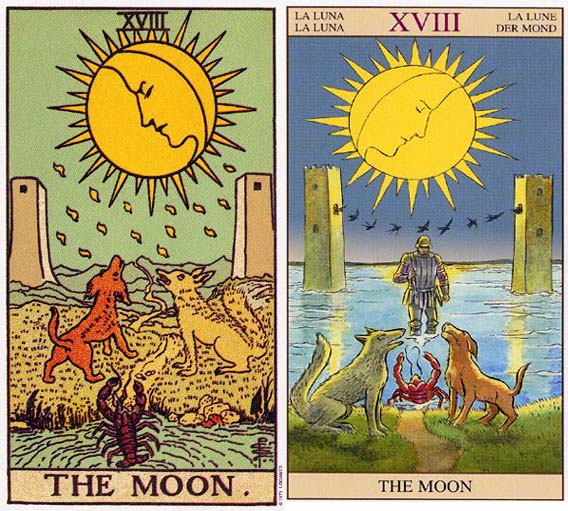

塔罗牌月亮（The Moon）解释
相关语：不安 对应星象：巨蟹座
月亮象征倾听你的梦，以找到内心世界的平静。月亮 THE MOON 暗示要面对恐惧，也正阻碍着你去做某些事情。逆位的代表存在内心的恐惧或是尚未解决的问题开始显示出来，找寻星的力量去克服吧。
在月亮这张牌中，有一只狗和一只狼对着月亮吠叫，因为水池里面出现了一只小龙虾。有一条小径从水池通往远处，穿过两座塔之间通向山上。这里的挑战就是要从水池边沿着道路走，而不怕被狗和狼所引起的恐惧击倒。这些动物代表你的较低层次、动物的本性，以及你对未知或尚未充分理解之事物的恐惧感。
如果你曾经经历过重大的损失，或害怕生命中即将面临的改变，你或许就会注意到，在白天的时候你通常都可以理性地应付这些事情。恐惧或悲伤会再度猛烈袭击你的时间，可能是在晚上。太阳照亮外在的世界，月亮则照亮感觉、想象、希望和恐惧的内在世界。
想象是相当强而有力的，它可以让内心很快的产生和平、和谐和欢乐；它也可以以同样快的速度产生痛苦、惊惧、悲伤和愤怒。如果我向各位描述一只长满毛的长腿蜘蛛，正朝着一个睡在阳台藤椅里的小孩的脸上爬过时，你的脑海中就会出现一个意象，或某种反应。如果现在我要叙述的是，有一块干净的白色亚麻桌布在你的脚畔飘动，而你正轻啜着冷饮，边看着夕阳慵懒的沉入海中，那么你体验的又是另一番意象，或另一种反应了。
想想在过去曾经深深伤害过你的那个人，想想某个还没有解决的问题。每当你又想到那个人或那种状况时，你可能就会再度经历某种程度的痛苦。现在是你的想象力在伤害你，你的想象力在利用那个人或状况，在他们不知情、也没有得到他们统一的情况下利用他们。你知道有多少人以这种无益、甚至有害的形式在运用他们的想象力吗？
月亮是一张代表梦和想象的牌。梦是转化为意象的潜意识能量。当这股能量强烈到无法被吸收或理解时，可能会导致狂野的梦、噩梦， 甚至疯狂。“月夜梦行症”（Lunacy，或指心神丧失）这个词就是源自“Luna”这个字，也就是月亮的意思。
月亮牌所代表的潜意识恐惧，必须由我们单独去面对，因为它们超越语言，深植于我们内在的动物性。如果你已经在星星当中得到了信心，而且能够接受这些来自你潜意识的狂野事物，这些惊惧就会平息下来，水面亦将风平浪静，而道路依然存在。这条道路是通往山郡那一边的太阳，然而你的内在世界得到平静之前，你还是无法充分体会外在世界。
月亮代表离开外在事物，转而内省。它意味透过梦境和下意识强力的连结在一起。它是一张代表占星学上巨蟹座的牌。其他代表巨蟹座的牌还包括战车和圣杯的宫廷牌。巨蟹座的第二道课题是克服个人的恐惧，以便创造性地运用我们的想象力。
月亮（The Moon）牌面解释
这是张代表迷惑和不安的牌。在月光下龙虾从水中爬出，向月亮女神走去，它要选择远方的两座高塔中正确的一座，因为那座高塔是觐见月亮女神唯一途径。岸上的狼和猎狗因为同样被月亮 女神吸引着，暂时没有发觉近在咫尺的龙虾。狗代表着小龙虾对旧世界的依赖，而狼代表着小龙虾的恐惧。
月亮是与精神世界的桥梁，月赢月亏象征着转变，当满月出现时，人们知道它马上就要亏损了，心中的不安油然而生。月亮越大就意味着离变小越近，在幸福时担心不幸的到来，使人们有不能有任何的懈怠感。
月亮也是女性和情感的象征，在事业上则指具有艺术性或创造性的事业，它也暗示着欺骗。解这张牌的关键，就在于“迷惑”。
月亮（The Moon）正位解释
不安、迷惑、动摇、谎言、欺骗、鬼迷心窍、动荡的爱、三角关系
当牌面正立时，在事业上，你可能有些不满足，希望能够把自己内在的力量全使出来，于是你开始想要晚上的时间。感情方面，你很敏感害怕被伤害，尽管有伴侣的承诺，你仍然犹豫不决，甚至有逃避的想法。
月亮（The Moon）逆位解释
逃脱骗局、解除误会、状况好转、预知危险、等待、正视爱情的裂缝
当牌面倒立时，在事业上，你因为外界的压力开始退缩了，并对自己的既定目标产生了怀疑。在感情上，你们之间的问题开始浮现，虽然有些痛，但是只要共同面对存在的困难，问题就解决一半了。
大体上的意义
月亮代表强烈的梦想和经由梦传达到你意识思想中的直觉。强而有力的梦企图告诉你某些事情。倾听你的梦，你将会发现你所要找寻的答案。或许在清醒的时刻你可以轻易地回想起那些梦境，或许你会在正常的睡眠之后觉得疲惫不堪，因为强烈的梦境干扰了你的睡眠型态。
在事业上，月亮通常是指某种具艺术性或创造性的事业，或夜晚工作比白天还多的情形，这方面的典型事业可包括写作、摄影室内设计或任何需要运用到想象力的工作。
有时候月亮也可能是暗示欺骗。有些事物隐而不见，因此得看得比表象更深入，以发掘某种状态的真相。
月亮暗示你需要面对你的恐惧，因它们可能会阻碍你去作某些事情，或获得某些东西。多留意你的潜意识思考。
倒立的月亮
当月亮牌倒立时，牌面上所画的动物及它们所代表的恐惧在召唤你去处理它们。现在梦变成梦魇，因为你在为内在和外在世界之间的差异找寻解决之道。也许你会发现你在自己有形世界中制造争端或不协调，想以这种方式来征服那些存在于你内心世界的恐惧。你可能会将这些挑战转为有形的形式，如此你才能以一种阳光下的明白方式来处理它们，而非设法战胜那些埋伏在月光下的模糊事情。
月亮倒立暗示着那些尚未被解决的事情又降临到你身上了。现在是去面对这些内在挑战，而非退缩到有形世界的安全领域中的时候了。这也是回到星星牌，以体验其中所提供的信心和希望的时候。这也可以提醒你，同一个池子既包含了你的恐惧，也包容了你的力量和问题的解决之道。
两性关系上的思考
在两性关系分析当中，月亮代表表面上一切事情都很美好，但是底层却波涛汹涌——在日常生活中一切都圆满和谐，但是暗地里确存在着某些没有被讨论，被认知或尚未解决的事情。或许你对于更深刻的承诺怀有某种恐惧，或你想要离开这段关系，然而恐惧却又把你拉了回来。你的伴侣或许会令你回想起过去的两性关系，或父母关系中尚未解决的事情。事情不能光看表面，如果你愿意倾听你的梦境或潜意识，或许你就能发现你内心深处到底真正发生了什么事。